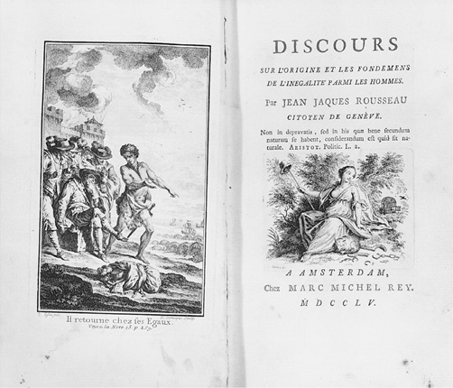
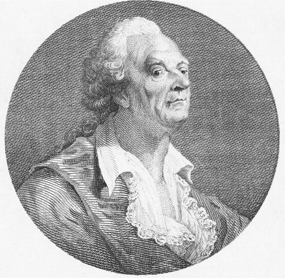
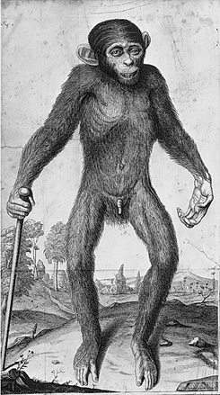

《论不平等》是卢梭早期最重要、最具有实质性的作品。这部作品和《社会契约论》《爱弥儿》对他所有作品都产生了最深远的影响。然而它对读者的影响并不像大众对《论科学与艺术》和《论法国音乐的通信》的反应那么直接和强烈。因为它并未像“一论”那样参加第戎学院论文奖初赛便获奖，而且它缺少“喜歌剧之争”那样的话题性，后者激起了法国和意大利音乐及政治盲目拥护者的强烈感情。与其早期著作相比，这部作品减少了华丽辞藻的点缀，转而通过更为严谨的论证，首次以政治和社会的习语对文明及其虚华进行了更为深入的分析，从而标志着卢梭的历史哲学以其最成熟的形式出现。这部作品从法国评论家那里获得了一些褒奖的同时，也招来了更多的敌意，它的巨大影响可能首先产生于苏格兰，亚当·斯密出版的《道德情操论》在一定程度上是为了回应卢梭的《论不平等》。蒙博多勋爵在《语言的起源与发展》中，依据文中拥护的关于这一主题的主张，对类人猿的人性问题提出了自己的观点。在德国，无论是康德的《普遍历史观念》，还是赫尔德的《人类历史哲学观》，都受到了进化学说的启示。康德尤其从文化修养和道德培养的区别中获得了灵感，而赫尔德从语言的社会形成中获得了最多灵感。克劳德·列维-施特劳斯认为这是启蒙运动对人类学的首次贡献。尽管它比卢梭的其他作品都更久远，但它已被视为他的主要作品中——当然，也是他一生中所有出版的作品中——最激进和最进步的一部。
《论不平等》之所以有这样的声誉，部分原因在于卢梭对包括古代和现代自然法概念以及社会契约的当代理论在内的早期政治学说的批判态度。虽然孔狄亚克的语言哲学和布丰的自然历史在一些主题上也受到针对性的关注，但霍布斯、普芬多夫和洛克的政治和社会思想在卢梭的文章中受到了最严格的审视和最长篇幅的谴责。他深信，这些思想家描述了人类堕落的来源，这些描述总体而言是正确的，却误解了他们思想的真正意义。一方面，他们解释了人们过去是如何被蒙骗而接受那些使他们道德腐败的体系的；另一方面，他们相信每个人都有责任维护这样的体系，因为他们能为卢梭完全虚构的问题提供解决方法。
卢梭对霍布斯、普芬多夫和洛克的反驳大致如下。在《论不平等》的序言中，他声称人与人之间存在两 种不平等，一种是天生的或生理的，因此超出我们的掌控，另一种是道德的或政治的，它取决于人类的选择（《作品全集》第三卷，第131页；《〈论文〉及其他早期政治著作》，第131页）。卢梭注意到，这两种不平等之间并不存在根本联系，因为统治着多数人的少数人所提出的统治地位的主张，如果没有得到承认和认可，就没有任何力量，且这种认可是被他人授予的，而不是自然赋予的。因此，世界范围内持久的道德和政治的分歧永远都没法通过区分个体差异的生理特征来解释。如果事实正好相反，那么行使武力本身就会产生服从的义务，人们也会以与引发他们的恐惧同样的理由来获得周围人的尊重。在《社会契约论》中，卢梭更详细地解释了力量不是权力的基础，这也是他在《论不平等》中的立场。和其他社会契约理论家一样，卢梭相信，在社会中区分人的规则只有通过人们的同意才能得以流行。因此，他在文章第一部分提出，自然产生的不平等必然已经转化 成人类所要求的不平等（《作品全集》第三卷，第160—161页；《〈论文〉及其他早期政治著作》，第158页）。
卢梭在“二论”中构思的中心主题是论述人类是如何经历这种转变的。因为在自然状态下，我们的祖先之间只存在偶然的、不频繁的接触。他声称，个体之间最初的区别无足轻重。然而，人类自己建立的不平等，构成了各个团体的主要特征（《作品全集》第三卷，第162、193—194页；《〈论文〉及其他早期政治著作》，第159—160、187—188页）。在最初的状态下，我们的祖先彼此间可能没有“道德关系和明确的义务”（《作品全集》第三卷，第152页；《〈论文〉及其他早期政治著作》，第150页）。由于自然人既不需要像他一样的其他生物的陪伴，也不希望伤害其他生物，只有在社会体制诞生后，人的弱点在他的同胞看来才是胆怯，人的力量才会对其同胞构成威胁。相反，社会中盛行和明确的关系，其中产生的人与人之间的不平等，通过从属和命令，永久地将个体联系在一起。

图11 《论不平等》的卷首插图和扉页（阿姆斯特丹，1755年）
相反，由于霍布斯、普芬多夫和洛克完全错误地理解了自然状态的概念，他们错误地认为所有人都必须拥有平等的权利，这些思想家都曾经想象过，这种平等所带来的结果就是每个人都会对其同胞心存忧虑，无法安然居住其中。霍布斯断言，具有同等能力的人，只有在危急情形下才会追求共同的目标，因为如果没有一种令其敬畏的公权力，他们就会处于战争状态（《论公民》第十章；《利维坦》第十三章）。他认为，为了实现和平，人们必须建立一个人为设定的统治力量或“不朽的神灵”，动用绝对的权力来保护每个人，这样，平等所带来的恶性影响可以通过所有群众对利维坦的服从来克服。因此，虽然卢梭认为自然状态的不平等对人类而言完全没有 意义，但根据霍布斯的观点，在无主的世界里也必然存在公平，这一事实非常重要，这也是为什么在那里不可能实现和平的原因之一。
同样，对普芬多夫而言，人们在最初一定是处于不稳定的平等状态。他同意霍布斯的观点，我们是受自私所驱使，而并非出于任何冲动的善行或友爱，他还提出，在自然状态下，我们受制于自然环境或者凶猛的动物，我们因脆弱和胆怯团结在一起，并非积极而是消极地为了生存（《自然法与万民法》第二卷第三章，第20页）。这是普芬多夫关于社会性 或自然社交性的学说，他声称，这一特性让我们的祖先由于人类特有的无限能力和贪得无厌的欲望，从而建立了日益复杂错综的社会。因此，一个政治共同体的发展也会相应地比霍布斯想象的要缓慢得多。但对于普芬多夫而言，他同样是通过我们接受绝对君主的统治，来克服我们自然平等状态下危险的不稳定性。如此构想的公民社会或文明为我们野蛮国家的野蛮痛苦提供了一种补救的方式。康德后来将这种关于社会起源的理论称为“非社会性社会”学说。
对洛克而言，这也是人们在最初状态下的基本平等，“在这种情况下，所有的权利和管辖权都是互惠的”（“二论”第二章），这必然使财产的使用权变得不确定和不稳定。他认为，只有在公民社会，长期被统治力量所捍卫，私有财产才能得到保障，我们的自然权利方能得以实施。霍布斯的核心关注点是和平的政治维度，普芬多夫的关注点是人民对安全的集体需求，洛克的关注点是财产的民事保护，但这三位作家一致认为，在没有政府的情况下，个人自然无法生存，因此，必须建立起人为的政权，从而减少伴随人类自由平等的危险。
卢梭在“二论”中针对不平等的描述，至少在一定程度上是为了反驳这些主张。在他看来，霍布斯、普芬多夫和洛克构想的至上权威必然进一步强化了人们间的对立，从而导致彼此分离，而并非克服这些差异。卢梭认为在他们以及其他政治思想家的作品中都不可能找到回答为什么 人类在自然状态下应该从他们的同胞那里寻求保护的答案，但他认为，他们的思想汇集在一起，解释了个体如何 建立这些在腐败社会中造成人类之间差异的固定且明确的关系。尤其针对霍布斯的观点，卢梭表示，人类的确是为了保护自己的生命和财产，从而发展出社会责任，但是由于在自然状态下，人类不可能处于交战状态，不拥有任何财产，也没有任何野心支配或任何理由害怕彼此，因此关于他们天生需要安全感的想法是不可思议的（《作品全集》第三卷，第153—154页；《〈论文〉及其他早期政治著作》，第151页）。自然状态不包含任何驱逐其居民的内在因素，而嫉妒或不信任的情绪会使人们担心自己的安全或害怕失去自己的财产，但在卢梭看来，这些情绪是不会出现在那些满足地独自生活的人们身上的。
在《论不平等》中，卢梭承认私有财产的概念构成了最 基本的义务原则，虽然最初的原始人不能制定任何类型的原则，他坚持认为这种想法一定是人类在部落定居后出现的。普芬多夫错误地认为，人类天生的社会性促使人们生活在一起，因为社会本身是不自然的，并且依赖于一套共同商定的符号体系，即语言，从而让人类共同使用的可以相互理解的对话框架的构建成为可能。但是如果没有一个预先存在的社会，语言就不可能出现。社会塑造了语言，并赋予了个体话语一个被普遍接受的意义。卢梭在一篇专注探讨语言起源的文章中，主要论述了孔狄亚克的语言哲学并得出结论认为，就像社会需要语言一样，语言也需要社会，他没法判定哪个最先出现（《作品全集》，第146—151页；《〈论文〉及其他早期政治著作》，第145、149页）。
在卢梭看来，孔狄亚克1746年在《人类知识起源论》中曾正确地理解了无论如何设想，人类在原始状态下都不可能出现议论性语言，因为语言技能只能通过长期的学习训练才可获得。和卢梭一样，孔狄亚克也认识到，人类的第一语言一定是源于自然的呐喊。但与卢梭不同的是，他猜想人类这些冲动的话语一定是思想的基本标志，代表了我们的祖先与思想最早期的联系，因为即使在最遥远的古代，他们使用任意的语言符号，也一定是指代一些东西，而不是语言本身。在《论不平等》中，卢梭就这一论点提出了异议，他认为人类最初不可能在没有语言的情况下孕育思想，就像人类不可能在这样的情形下形成社会一样（《作品全集》，第147页；《〈论文〉及其他早期政治著作》，第145—146页）。他认为，野蛮人需要掌握自然历史和形而上学的专业知识，才能掌握即使是最原始的语言符号的一般语义，因为语言不仅代表思想和图像，而且是表达和构成思想和图像的不可或缺的组成部分，语言不能独立存在。
在我们最野蛮的状态下，如果没有社会和语言，洛克所描述的财产权的建立是不可能实现的。在社会生活的语言规则首先被建立之前，男人和女人都不能表达或理解所有权的声明，因为如果没有任何形式的语言，个人就不可能理解某样东西是专属于他们的这一概念，也不可能尊重任何属于他人的东西。事实上，卢梭评论道，私有财产制度必须依赖于人类历史进程中发展起来的各种各样的惯例和习俗，它不仅仅需要语言，还需要工业、商业、进步和启蒙，这样它才能实际上构成卢梭所提出的“自然状态的最后关头”以及“公民社会诞生的最初时刻”（《作品全集》第三卷，第164页；《〈论文〉及其他早期政治著作》，第161页）。
然而，如果只有在人们相互间开始建立起固定的关系之后，才能获得土地的专属权利，那么我们应该认识到，建立在这一思想上的制度是之后所有社会关系的核心，这对卢梭来说仍然是至关重要的。卢梭说：“第一个围住一片土地，想出‘这是我的 ’这一说法，而且发现人们居然轻易相信他……的人是公民社会的真正创始人。”这样一个骗子，是我们人类的野蛮祖先之一，他受到洛克用心险恶的狡猾口才的启发，从而驱使人类进入社会服从，并掩盖了洛克在提出私人所有权这一观点之前已经认识到的事实，即“地球的果实属于我们所有人，地球本身不属于任何人”（《作品全集》第三卷，第164页；《〈论文〉及其他早期政治著作》，第161页）。如果公民社会最初的形成是为了证明人类的财产关系是合理的，那么，一定也是这些 关系导致了战争的爆发。土地将由于个人的占有和继承而变得稀缺，而人口必然会增长，从而导致富人掠夺、穷人抢劫，以及双方肆无忌惮的激情（《作品全集》第三卷，第175—176页；《〈论文〉及其他早期政治著作》，第171—172页）。卢梭提出：正如洛克一直错误地认为，人类在建立任何其他社会机构之前就可以建立土地的专属使用权及所有权；霍布斯也未能认清，人类在社区中形成财产关系是战争的主要原因（《作品全集》第三卷，第136、170页；《〈论文〉及其他早期政治著作》，第135—136、171—172页）。由于个人只有在建立了分裂的财产关系之后才会相互伤害，而且，人们在原来没有财产的状态下，显然没有理由互相伤害或让他人受苦。
因此，卢梭认为，人类为了财产安全而制定的社会契约不可能是在自然状态下形成的，相反，这一定是社会中的富人对穷人的欺骗。其条款表面看上去合情合理，因为它们一定提到了公正的法治和每个人的安全，但其真正的目的是为了建立必要的秩序，从而以牺牲一些人的财产为代价，保护另一些人的财产。通过协议，穷人（即绝大多数人）会被要求拒绝他们分享财产所有人所拥有的财富的权利，从而换取和平以及对其生命的保护。正如卢梭所说的那样，“所有的人都冲向他们的锁链，相信自己已经获得了自由”（《作品全集》第三卷，第176—177页；《〈论文〉及其他早期政治著作》，第172—173页）。19世纪，蒲鲁东及其他社会主义者提出的“财产是盗窃”，在很大程度上也归结于这一论点。
正如卢梭所描述的那样，霍布斯、普芬多夫和洛克的政治学说只是为了提供对人类道德不平等的法律认可，将其载入法典，以及人为建立权威的力量，只是那些实际上是对立的社会关系，需要以公民社会的司法规则来控制。卢梭在《日内瓦手稿》第一卷第二章中提出，霍布斯的错误并不在于他推测人类一旦变得善于交际就会发生战争，而在于他认为这种状态是自然的，并且是由于恶习造成的，而并非由此产生恶习（《作品全集》第三卷，第288页；《〈社会契约论〉及其他晚期政治著作》，第159页）。实际上，这三位思想家中的每一位都将他们的想法视为解决某些问题的方案，而这些解决方案事实上是问题的起因（《作品全集》第三卷，第184页；《〈论文〉及其他早期政治著作》，第179页）。霍布斯和普芬多夫关于人类基本素质的假设使我们看起来如此悲惨，以至于我们不得不钦佩政府带给我们的和平与正义，是政府将我们从野蛮人转变为公民。然而，当我们合上这些法律学者的精彩作品，并对人类进行整体审视时，我们看到了什么？卢梭的一篇短文《战争状态》提出了这一问题。这篇文章大约发表于1750年代，也许与他针对阿贝·德·圣皮埃尔18世纪初期倡导永久和平的项目所作的评论有关。我们看到每个人都“在铁轭下呻吟”，他回答说，“整个人类被一小撮压迫者碾轧”，到处都在遭受痛苦和饥饿，而富人心满意足地享用着血和眼泪；在世界各个地方，只有“强者用令人敬畏的法律力量武装自己，从而支配弱者”（《作品全集》，第608—609页；《〈社会契约论〉及其他晚期政治著作》，第162页）。在法国大革命期间，卢梭的激进追随者和崇拜者也同样发自肺腑地表达了类似的观点，并表述了对旧制度 的完全蔑视。
卢梭认为，霍布斯、普芬多夫和洛克忽视了他们思想的真正意义，这主要是因为他们对人性持有错误观点。他们将一系列只能在社会中获得的人性特点加诸野蛮人身上。由于他们未能将社会属性和自然禀赋区分开，因此他们在对于人类原始行为举止的描述中，镶嵌了太多归因于人类发展的因素。卢梭在他的“二论”中标注了一个重要且较长的脚注；他提出，这些思想家在为自己设定了解释自然状态的任务之后，毫不犹豫地将其思想转换穿越到几个世纪后，就好像那些与世隔绝的人们早已生活在他们的同胞中一样（《作品全集》第三卷，第218页；《〈论文〉及其他早期政治著作》，第216页）。更糟糕的是，他们提出，我们最致命的一些恶习应该得到法律的授权。
那么，剥离我们社会历史的梦魇，我们的祖先一定像柏拉图在《理想国》第十卷中所描述的被时间蹂躏破坏之前的格劳克斯雕像一样（《作品全集》第三卷，第122页；《〈论文〉及其他早期政治著作》，第124页）。人类物种在社会中改变的方式解释了人类的变性，在20世纪后期，这一转变被描述为人类从自然走向文化的过程，这是《论不平等》的主要论述目标。卢梭认为，我们未开化的祖先和其他原始状态下的动物一定具有共同的特征：第一，“心无旁骛的自然的自爱 ”或者说持续的求生冲动；第二，“怜悯 ”或者说对同物种其他成员的同情。“思索人类灵魂最初及最简单的运作方式”，卢梭在书的前言中写道，“我想在人类拥有理性之前，我可以在其中感知到两个原则”，其中一个涉及我们自身的福利和保护，而另一个则激发了人们在看到任何其他生物遭受痛苦或死亡时都会产生自然的反感。他声称，没有必要引入普芬多夫的社交性思想，所有自然权利的规则似乎都是从这两项原则的一致性中衍生出来的（《作品全集》第三卷，第125—126页；《〈论文〉及其他早期政治著作》，第127页）。这些属性一定出现在理性和社交能力之前，因为后面这些品质需要很长时间才能成熟，因而在人类的原始状态中不可能出现明显迹象。在卢梭之前的自然法哲学家们声称，人类从根本上是由一种社会性格联系在一起的，这种社会性格是由人类的理性促成的，因而卢梭在《论不平等》中反对了社会的自然法则基础论。他不承认人类与动物的不同之处在于人类拥有任何优越的先天素质或原则，因此，他对第戎学院的有奖问题——“人类不平等的起源是什么？这是由自然法则授予的吗？”再次予以否定，就像他在《论科学与艺术》中表述的一样。卢梭在总结“二论”时声称，少数人拥有过剩的奢侈品，而普罗大众却缺乏最基本的必需品，“这显然违背自然法则”（《作品全集》第三卷，第194页；《〈论文〉及其他早期政治著作》，第188页）。他认为，不平等不是由自然法则赋予的，因为自然法则没有规定人类在原始状态下的行为准则。他在“二论”的其余部分试图追溯道德不平等的起源和历史。
卢梭认为，霍布斯特别忽略了人类的怜悯 和天生的同情心，因为他对人类心无旁骛的自然的爱 或自爱有着错误的印象。他曾设想，个人为了保住自己的性命，不得不抵挡其他人对自己迫害的企图，因此，在自然状态下，任何人都不可能既富有同情心又拥有安全感。相反，对卢梭而言，关心自己的同时并不排除关心他人的幸福；但他认为，以牺牲其他任何人为代价而无情换取的安全感，只会招致空虚和蔑视，从而把陌生人变成敌人。卢梭认为，曼德维尔在1714年《蜜蜂的寓言》中关于人性的理论虽然与霍布斯相似，但曼德维尔同意上述观点，而霍布斯却并不同意（《作品全集》第三卷，第154页；《〈论文〉及其他早期政治著作》，第151—152页）。卢梭在另一个重要的脚注中指出（《作品全集》第三卷，第291页；《〈论文〉及其他早期政治著作》，第218页），他提出的“自爱”的概念，并不是真正意义上的爱自己 ，而是自私之爱 ，或者说是虚荣心，一种纯粹的、相对的、人类后天产生的感觉。这种感觉促使人类在社会中更 为关注自我，而不是别人，这也是“荣誉感”的源泉，而重要的是，霍布斯却将“荣誉感”错误地归结为普遍的人类本性。
在未经驯化或原始的状态下，动物和人类在照顾自己的同时，也 善待其他同类。只有那些道德败坏的人一直盯着其他人并与其比对，希望自己和其他人一样甚至比其他人更好。在自然真实的状态中，自尊 或虚荣是不存在的。我们与其他生物所共同拥有的自爱和同情之心，足以确保让我们存活下来。因此，卢梭在“二论”中将自尊 从他对人性的定义中去除，这也让卢梭脱离了早期现代哲学的一个重要传统，即对人类走向社会动机的各种猜测。他们所宣称的人类自私的感情凌驾于人类理性之上，一方面，人类容易受到有益于公共利益的良性控制方式的影响，另一方面，在充盈着私欲的圣奥古斯丁派哲学家中，帕斯卡尔的追随者们、休谟和其他苏格兰启蒙运动的道德家们推定这让美好的贸易 成为可能，从而最终让国家的财富停止了对奢侈的追求。持续发展的还有17世纪神学到18世纪社会心理学的转变，从而宣告了资本主义精神并向孕育它的机构提供担保。但是，卢梭认为这类争论是完全错误的，因为他们将自爱这一已然带有社会性的概念归因于那些原本就不会被其所触动的人们。正如《论不平等》中所描述的伊甸园那样，人类没有经受任何可以导致其堕落和崛起的诱惑。
然而，卢梭同时也认为，人类有一种可以改变其本性的独特能力。虽然每种动物都天生具有维系生命所需的本能和能力，但人类相较而言却是自由的个体，有能力进行选择。与那些总是被自己的欲望所奴役的生物截然不同，人类被赋予了自由意志，因此，至少我们有责任决定自己的生活方式。霍布斯已经否定了“自由”这个古老的概念，卢梭通过区别强迫行为和故意行为，让“自由”这个概念重新恢复了意义。在霍布斯看来，动物并非被自己的欲望所奴役，因为他相信这些欲望对它们产生的作用是激励而并非约束，从而成为它们行为的推动力，而并非阻碍力。他还认为意志自由的想法是荒谬的，既然只有肉体可以获得自由或被阻碍，而意志不受任何动作的影响，就不会受到任何外部障碍的阻碍（《利维坦》，第二十一章）。卢梭在这点上应当感谢霍布斯曾试图推翻那些传统古典哲学，卢梭确信自然会对动物行为产生内部约束，由于我们的祖先总能以各种方式满足自然的冲动，因而不会受到驱动并控制所有其他生物的本能所束缚（《作品全集》第三卷，第141—142页；《〈论文〉及其他早期政治著作》，第140—141页）。我们人类中每一个没有智力障碍的成员原本都可以自由地管控自己。
卢梭认为，正因为处于自然状态的人类能够使 自己区别于其他动物，而不是因为它们从开始就被赋予任何特定或独特的属性，所以我们的祖先肯定总是比其他任何物种都更有优势。普芬多夫认为，最初将人类拉到一起的一定是人类生理上的软弱和胆怯，这与霍布斯自然战争的概念相矛盾。然而，卢梭认为普芬多夫的猜想和霍布斯的观点一样错误。他声称，人类社会没有必要避免战争或克服无助；自由意识和人类做选择的能力才让社会的建立成为可能，而不是由于动物的本能选择。人类社会是可选择的，而不是必要的，源于人类的不确定性，而不是自然规定的。我们的祖先即使在自然状态下，也一定可以自己决定如何最好地应对每一种情况。他们的灵活饮食可以包括水果或者肉类；他们可以与陆地动物一起奔跑，但同时也能爬树；他们可以选择面对危险或者逃离危险（《作品全集》第三卷，第134—137页；《〈论文〉及其他早期政治著作》，第134—137页）。在《论不平等》中，卢梭评论道，野蛮人正是“在意识到自由后，他灵魂中的灵性才得以展现”（《作品全集》第三卷，第142页；《〈论文〉及其他早期政治著作》，第141页）。
人类必然在某些方面与其他物种有所区别，而且我们本身拥有可完善性 。这是卢梭在历史哲学和政治思想史上所引入的术语。在最初状态下，每个人一定都拥有不仅可以改变其基本素质，还可以提高其素质的能力。一旦具备了任何其他动物都不会拥有的习惯，人就有能力让这些习惯成为其性格中的永久特征，而且，在卢梭看来，正是因为人类可以作为道德主体，让自己不断进化趋向于完美，而不仅仅是有别于其他物种，人类才可以经受住历史 的改变。卢梭在他提出的生物论点中写道（《作品全集》第三卷，第142页；《〈论文〉及其他早期政治著作》，第141页），一千年之后，除了人类之外，每种动物都保留了与第一代相同的本能和生活模式，物种发展史仅仅是对个体发育的概括。然而，由于人类拥有自我完善的能力，有能力完善自己的本性，同样人类也有别于动物，可能做出导致自我伤害的倒退行为。

图12 布丰肖像
因此，卢梭的结论是，人类早期潜在的自由和追求完美的特质使人类的历史进化成为可能。假设人类本质上比霍布斯、普芬多夫和洛克所观察到的更像 动物，他仍然坚持野蛮人和文明人之间的区别在很多方面都比野蛮人和其他动物的区别更大（《作品全集》第三卷，第139页；《〈论文〉及其他早期政治著作》，第139页）——他对这一观点进行了详尽的阐述，并与布丰在1749年发表的不朽著作《自然史》中针对同一主题的观点形成了鲜明的反差。在《论不平等》一书中，卢梭对这部集科学与文学于一体的杰作大加赞赏，从中汲取了启发他思考的很多主题，包括有机生命的历史、物种作为一个整体的可繁殖和遗传的特征，特别是关于自然的发展模式。没有其他哪部作品能像《自然史》一样获得卢梭如此多的关注，在同时代的思想家中，布丰也是卢梭最为敬仰的。实际上，“二论”在很大程度上被认为是关于人类和市民社会史的一系列猜想，类似于布丰在《自然史》中所描述的地球的起源以及动物的诞生、生长和衰退（《作品全集》第三卷，第195—196页；《〈论文〉及其他早期政治著作》，第189—190页）。
但是卢梭正是在自然史和人类史到底可能在哪里出现交汇这一点上与布丰发生了争论，他在争论中主要采用的观点是人类物种的可变性；布丰在对其他物种的描述中均提到这一点，卢梭甚为赞同，但布丰却拒绝在对人类的研究中沿袭这一观点。根据布丰的观点，尤其在其《自然史》第二卷、第三卷和第四卷中，自然在动物和人类领域之间构建了不可逾越的鸿沟。这是生物链或者伟大的存在 之链上一个质的突破，确保了人类比其他动物更具有优越性，因为人类拥有心灵或灵魂。1766年，主要在17世纪英国解剖学家爱德华·泰森之后，布丰针对黑猩猩研究了这一观点。他和泰森都称之为“orang-utan ”（马来语，意为“森林里的人”），作为大多数类人猿的统称，直到1770年代这些非洲和亚洲物种才各自被恰当地区分开。在接受猩猩与人类的外表非常相似的同时，泰森和布丰坚持认为它不可能是人类的一种，因为它明显缺乏人类的理性和语言能力。然而，卢梭即便同意人类的天性具有独一无二的精神性，但在“二论”中，卢梭对布丰的论点及其对猩猩的运用进行了反驳，声称世界上人类的多样性表明在经过长期发展后，人类物种可能经历了自“最初的胚胎”以来比天气或饮食造成的更为剧烈的变形（《作品全集》第三卷，第134、141—142、208页；《〈论文〉及其他早期政治著作》，第134、140—141、204—205页）。

图13 爱德华·泰森《猩猩、森林人：或对俾格米人的解剖》中的第一幅插画（伦敦，1699年）
由于语言对人类而言并不比它所表达的理性更自然，我们不能像泰森和布丰所做的那样，将文明民族的语言作为猩猩低于人类的证明。正如卢梭所设想的那样，这个错误与霍布斯、普芬多夫、洛克和孔狄亚克的错误是一样的，即错误地认定社会中复杂行为的显著特点是人性的证据。卢梭认为，猩猩究竟是原始人类还是其他物种，只能通过实验来证实；根据布丰自己对能繁衍的物种的定义，这意味着要对猩猩繁殖后代的能力进行测试，如果有繁殖能力的话，那就意味着一个男性或女性与该生物的性结合能产生后代（《作品全集》第三卷，第211页；《〈论文〉及其他早期政治著作》，第208页）。卢梭认为，猴子显然不是我们种族的成员，很大程度上是因为它们缺乏人类所具有的趋于完善的能力。但是，正如他在回应自然主义者查理·博内对他这一观点的批判时所清楚表述的那样，他认为猩猩拥有这一能力至少是可能的（《作品全集》第三卷，第211、234页；《〈论文〉及其他早期政治著作》，第208、227页）。
卢梭从来没有赞同过任何关于一个物种向另一个物种转变的观点，在《论不平等》发表一个多世纪以后，这一观点成为达尔文自然进化论的核心。他太过于相信上帝创造的存在之链上物种的固定性，通过假设猩猩可能是原始人的一种，他认为这一生物可以直立行走，形体像人一样，在动物学上有别于猿和猩猩。卢梭关于这些动物的观点主要聚焦于语言方面，并且反对布丰以及其他自然历史学家和解剖学家的观点。他只希望强调的是，由于语言表达了社会习俗，并且需要习得，我们不能仅仅因为它们不具备我们表达语言的能力，而把身体上跟我们相似的动物归为完全不同的物种（《作品全集》第三卷，第209—212页；《〈论文〉及其他早期政治著作》，第205—210页）。然而，在卢梭对猩猩的思考中，他对身体人类学和进化生物学的早期历史产生了一定的影响，他对于明显不同的物种可能在基因上是相似的，甚至是相同的这一假设，开启了生物链上连续关联的可能性；这最终代替了他自己提出的固定性的想法，取而代之的是变形和转化。18世纪没有人认为人性在人类发展的过程中容易发生改变，也没有人认为野蛮人在动物和文明人之间更接近动物。在卢梭之前，没有人设想过人类历史是从猿进化而来的。他所推测的猩猩的形象是一种自然状态下不会说话的野蛮人。巧合的是，与接下来至少两百年内对动物行为的描述相比，卢梭的这一推测具有更强的实证的准确性，直到1960年代比卢特·葛莱迪卡斯、约翰·麦金农和彼得·罗德曼在东南亚进行的实地研究。在评论这些生物游牧式的生存方式、食素的饮食方式、不常发生的性关系以及大多数情况下孤独和懒惰的生活状态的同时，卢梭尤其强调了把人类和猿类区别开的社会地位；猿类的生物特征，尤其是基因组成跟人类的相似性，并没有掩盖其行为特点上的巨大差异。通过把从社会剥离出来的人性描述成与最独立的猿类类似，卢梭对人类物种的动物学界限的推测，既指向人类生活的社会层面的复杂性，也指向人类原始状态的简单性。
当然，原始人在自然条件下的完美性并不能保证他们的道德进步，因为这种特性的真正 发展取决于个人在采用其各种社会和政治制度时所必须做出的实际选择。人类的可完善性只保证在一个或另一个方向上有累积的变化，这与人类退化和进步的历史是一样的。卢梭认为，人类实际上错误地自由运用了他们与所有其他生物共有的特征，因此，在其发展的过程中，人类压制了自己的同情心和自爱，从而导致了自己的堕落。随着野蛮人逐渐减少对自然的依赖，他们也同样更加依赖彼此，最初每个人的可完善性的实现与其天赋自由是相冲突的，而社会中的选举使其成为强加给自己的强制性的奴隶。卢梭总结道，个体的完美实际上导致了物种的衰老，因此，我趋向完善的能力被证实是人类所有不幸的根源（《作品全集》第三卷，第142、171页；《〈论文〉及其他早期政治著作》，第141、167页）。正是对这种自我完善的能力的滥用，而非自然法则，才使我们仅仅是身体上的差异能够转变为明显的道德差异，因此对社会不平的确立发挥了最主要的作用。
如果说自然首先创造了原始人之间最初的、无关紧要的差别，那么他们最初聚集在一起一定是一种偶然。在“二论”的几段文章中，以及在《论语言的起源》的第九章中，卢梭推测，一定是意外事故和自然灾害，如洪水、火山爆发、地震，将最初孤立的野蛮人聚集到一起，也许是通过岛屿的形成（《作品全集》第三卷，第162、168—169、402页；《〈论文〉及其他早期政治著作》，第159、165、274页）。卢梭提出，我们的祖先居住得更为聚集后，一定就不再以游牧的方式生活；他们使用自己发明的工具建造小屋和其他避难所，开始安顿下来并组建家庭，从而开创了人类历史上首次革命的新纪元，并且引出了财产的最初概念（《作品全集》第三卷，第167—169页；《〈论文〉及其他早期政治著作》，第164—165页）。后来，恩格斯在《家庭、私有制和国家的起源》一书中对此进行了详尽的论述。但是，假如情况确实如此，卢梭相信，这种野蛮人生活方式的革命，是几乎不可能导致社会不平等出现的。他在《论语言的起源》的第二章中提出，将我们推在一起的社会力量，与后来促使我们分开的不可能是一种力量（《作品全集》第五卷，第380页；《〈论文〉及其他早期政治著作》，第253页）。社会中普遍存在的道德差异是由人类自身而非自然或偶然因素造成的，社会不平等不可能仅仅是由于我们彼此生活在一起而产生的。
卢梭认为，当野蛮人开始以不同于以往的频次互相见面以后，他们开始辨别将哪些人选作自己的同胞，这种选择的方式才是社会不平等产生的最可能的起因。当我们的祖先在他们的原始居住地安顿下来，日复一日地面对同样的人，一定就开始注意到他们当中一些人所具有的与众不同的品质，例如，最强壮的、最灵巧的、最雄辩的或最英俊的。一般而言，他们也会同时意识到自然赋予的不同造成了他们体质的差别。每个人也肯定开始根据别人认为能代表他自身行为的特质来表明自己的身份，开始将自己和那些对他越来越熟悉的人进行比较，并且开始重视他所觉察到的差异。这种将某些特征赋予比其他特征更高价值的过程，让我们的祖先将其自然差异转换为道德差异。他们会把注意力集中在同胞的才能上，也希望自己的才能受到钦佩。他们开始嫉妒或鄙视那些与他们拥有不同特质的人，因此，公众尊重的不平等分配会将他们在社会等级中区分开来。“野蛮人活在自己的内心中，而善于交际的人，总活在自己之外，只能活在别人的眼中。”（《作品全集》第三卷，第193页；《〈论文〉及其他早期政治著作》，第187页）他们在选择哪些人作为自己同胞时会根据特定的特征进行人际关系分类，原始人类肯定因此而将区分自然属性的基本系统，变成了按照道德喜好排序的顺序系统。卢梭写道，这些新的发酵，产生了致命的纯真和快乐的组合（《作品全集》第三卷，第169—170页；《〈论文〉及其他早期政治著作》，第165—166页）。在孟德斯鸠或斯密看来，希望赢得别人尊重的欲望必定产生了相互的需求以及商业利益，从而缓和了原始人无尽的欲望，但卢梭认为模仿以及随之而来的通过商业来追求的自我完善，才是腐蚀人类原始状态下自给自足状态的罪魁祸首。
当然，我们野蛮祖先所推崇的各种人类特征不可能同时出现。我们的祖先一定是首先认出他们中拥有最强力量（生理属性）的人，然后再判断哪些人是最英俊或最雄辩的（明显的社会属性，取决于品位），从卢梭的叙述中很难看出为什么人类会觉得一些个人特质比其他特质更值得尊重。但是他坚信，一旦人们开始重视他们的差异，就已经开始建立他们的社会制度了。特别是原始人的灵巧和口才让私有财产的建立成为可能，卢梭在“二论”最开始几段文章中对此进行了阐述。公民社会的真正创始者要想找到头脑简单的人，会相信他所声称的他圈起来的那块地属于他，这些创始人一定将自己的灵巧运用在土地上，将口才运用在同胞的身上，从而使合法性成为所有将我们联系在一起的确定关系之根本。
私有财产建立之后，冶金和农业的技艺必然得到了发展，从而在提高土地生产力的同时，增加了土地拥有者与没有土地的人之间的道德差异。诗人们描述道，是金子和银子首先将人类推向文明。卢梭将此描述为人类历史上第二次伟大革命，而没有跟随哲学家们的观点，他们认为，人类革命推动了玉米种植、铁矿开采，从而让欧洲对奴隶的需求上升到新的高度，但还没有摧毁野蛮的美国（《作品全集》第三卷，第171—172页；《〈论文〉及其他早期政治著作》，第168页）。《论语言的起源》的第九章阐述了一个关于原始社会的不同观点，卢梭忽略了对人类早期历史中两次伟大革命的描述，而是以杜尔哥及当时苏格兰推测史学家（conjectural nistorians）的方式，提到我们经历的狩猎、田园生活以及耕种的发展阶段，分别和原始人、野蛮人和文明人相对应（《作品全集》第五卷，第399—400页；《〈论文〉及其他早期政治著作》，第271—272页）。但文章中并没有特别提到普芬多夫、孔狄亚克或布丰，这篇文章也没有像“二论”中论述的重要观点一样，继续企图颠覆霍布斯和洛克的学说。他声称随着继承和人口的增长，可用土地在减少，所有显而易见的土地都具有所有权，没有人能够获得或增加自己的财产，除非以牺牲他人的财产为代价。文明社会的这种状况必然导致战争，使我们祖先中的富人比穷人处境更危险，因为他们不仅冒着生命危险，而且冒着财产危险。因此，他们有一种特别强烈的动机，努力获得表面上平静的和平，由法律规定并由警察权力强制执行。为了保护自己的生命，穷人不得不放弃分享任何富人财产的权利，社会中灵巧和雄辩的成员，类似于《政府论》第五章洛克所描述的勤奋和理性的人们，因此可以通过骗局从别人那里获取财富，将狡黠的篡夺转变成不变的权利（《作品全集》第三卷，第176—178页；《〈论文〉及其他早期政治著作》，第171—173页）。法理学哲学家对人类本性的判断有可能是错误的，但他们对于人类历史的描述还是相当准确的，因此洛克关于私有财产的概念肯定在霍布斯之前，而且确实是霍布斯战争状态的主要原因。
卢梭认为，人们最初采用的不同政府形式——君主制、贵族制甚至民主制的根源都归结于当时体制中存在的不同程度的不平等（《作品全集》第三卷，第186页；《〈论文〉及其他早期政治著作》，第181页）。但是，由于每种政府都是为了使我们的道德区分合法化并赋予其权威性，因此政府在任何情况下都必须遵循相似的发展模式。这必然会逐步扩大富人的统治范围，同时增加了穷人的义务，直到社会中人们之间的主要关系转变成主人和奴隶之间的关系。最初经过同意建立的机构最终将屈服于专制权力，各个政府必然会在适当时候对其臣民造成过重的负担，以至于无法继续维系政府建立后想要维系的和平。公民社会也会因此屈服于革命性的变化，人们为了逃脱政治发展的周期性危机，只能转投新主，他们异于寻常的口才让这些人仍然遵守在混乱和革命中建造的奴隶制和专制的原则（《作品全集》第三卷，第187、190—191页；《〈论文〉及其他早期政治著作》，第182、185—186页）。“因此，”卢梭在其作品的结尾部分写道，“不平等的最后一项出现了，这是一个形成闭环的极致点。”（《作品全集》第三卷，第191页；《〈论文〉及其他早期政治著作》，第185页）一个最强大的人处于统治地位的新的自然状态并非源于其最初的纯净状态，而是建立在过度腐败的基础上。
我们的社会历史肯定最初创造而随后又摧毁了专制君主，后来恩格斯《反杜林论》把革命阶段的这种概况描述为“否定的否定”，由此出现了针对人类历史的辩证阐述，并且成为马克思出现的征兆。可以肯定的是，马克思本人从来没有同意这种判断，并且他像黑格尔一样，将卢梭视为启蒙运动的哲学家，认为卢梭致力于抽象的自然人权，这种权利在法国大革命期间的实现标志着资产阶级的政治胜利。但是，如果马克思在阅读《论不平等》时像恩格斯那样关注第二章，他可能会从中读到私有财产和社会不平等的理论；这与他自己定义的历史的概念是类似的，他认为历史就是一个接一个的阶级斗争，并且因为意识形态的法治而得到调和。卢梭《论不平等》的最后几页是他对社会的解读中最具有马克思主义特点的。
然而，我们应该记住的是，与马克思不同，卢梭论点的构想是对不平等起源的推测 。他的思想并非为人类的历史提供一种关于人性的理论，他对过去的描述源于他对人类所处的道德状态的理解。他认为，人类本性的本质只有在剥离现代、多余的行为之后，才能被发现。这样，自然人必须从公民身上剥离，而不是在野蛮人身上形成的文明人。自从卢梭开始从人性现状研究以来，这尊崇了卢梭自己的假设，即对过去的重建与任何实际事件的编年史几乎没有任何联系。所有事实都必须放在一边，卢梭说道，因为它们并不影响问题（《作品全集》第三卷，第132—133、162页；《〈论文〉及其他早期政治著作》，第132、159页）。他的调查是假设性的，而非历史性的，目的是解释事物的本质，而不是查明事物的真正起源。因此，自然状态被构建成一个虚拟世界，在这个世界里，社会的腐败特征被去除了；卢梭的出发点并非遥远的过去，而是我们都知道的现在的世界，过去留存下来的信息本来就很少，但现在的世界我们都很熟知。《论不平等》的构思与其说是人类的通史，不如说是以历史形式呈现出来的人类本性；卢梭将孤独的野蛮人描述为现代人的祖先，无论是在遥远过去的原始民族中，还是在霍布斯、普芬多夫和洛克等一些彻底的现代人中，孤独的野蛮人可能同样常见。卢梭认为，从来就没有真正的自然人，但只有将这样一个人物作为参照，才能提供一个关于我们道德变化的理论体系（《作品全集》第三卷，第123页；《〈论文〉及其他早期政治著作》，第125页）。
当然，如果自然状态是虚构的，那么我们试图回到自然状态的努力是没有意义的，正如卢梭在其作品最长的脚注中所坚持的那样（《作品全集》第三卷，第202—208页；《〈论文〉及其他早期政治著作》，第197—204页）。“人性从来不会倒退”，卢梭之后在《对话录》中坚持自己的这一观点（《作品全集》第一卷，第935页）。一旦被抛弃，我们失去的纯真就再也无法找回。甚至原始社会的形式，即卢梭所说的在“最幸福、最稳定的时代”（《作品全集》第三卷，第171页；《〈论文〉及其他早期政治著作》，第167页）所涌现的社会形式，也是文明人永远无法恢复的。在这样一种田园生活状态下，我们的祖先原本可以过着简单而和平的生活。这种状态处于想象的过去和真实的现实之间，同时包含了两者的一些元素。如果人类曾经生活在这样的条件下，那么留在那里或许对他们而言更有利，但是，已经失去的世界永远不可能重新恢复，一个从当下抽象出来的国家并没有为后世提供合适的道德准则。正如卢梭在回复斯坦尼斯瓦夫国王对其“一论”的攻击时明确表示，如果试图恢复人类的自然状态，人类将陷入混乱和破坏之中。腐败社会的弊病不能通过假装无知而消除。
正是以这样的方式，卢梭运用了霍布斯、普芬多夫和洛克的一些政治要旨来讨论不平等的起源。他相信，他们的想法相当精准地阐述的不是人类真正的义务，而是人类的过去。这些和其他思想家的理论中呈现的合同关系有助于解释，为什么人类会达成那些使他们道德腐败的协议。然而，卢梭认为，由于使人类堕落的社会习俗是由个人强加给自己的，因此即便在腐败的社会中，人类仍然有可能建立完全不同的制度。如果说我们天生拥有的自由已经彻底丢失，另一方面，我们自我完善的能力却完好无损，并且正如《社会契约论》中所声称的那样，就人类道德而言，可能发生的事情并没有像应该发生的事情那样得到明确的界定。人们在接受私有财产制度并从野蛮社会进入文明社会时，一定是滥用了人的可完善性，从而限制了自身的自由。但如果人天生是可以持续完善的，那么人所犯的错误至少原则上是可以纠正和克服的。在卢梭所想象的古代共和国中，公民社会是在一个框架内形成的，这个框架使公民在法律下享有道德自由和政治平等。在《社会契约论》中，卢梭开始关注如何在现代世界中也可以建立起不同的制度，也同样将自由和平等奉为神圣，就像曾经在日内瓦宪法下那样。